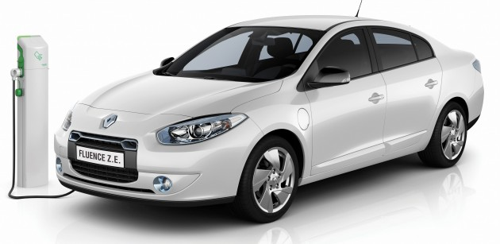
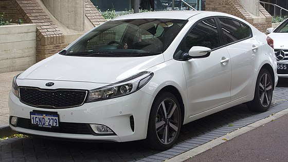

常見顏色: 白色
常見車牌字頭: P_ , R_
Remark: 其本上除左運滯既無乜人會買
常見顏色: 白色,金色,銀色,深藍色,黑色,藍色
常見車牌字頭: P_ , N_ , M_
常見顏色: 白色,銀色,黑色
常見車牌字頭: U_ , V_ , S_
常見顏色: 白色,銀色,黑色,藍色
常見車牌字頭: P_ , N_ , U_
常見顏色: 白色,銀色,黑色
常見車牌字頭: S_
常見顏色: 白色,銀色,黑色
常見車牌字頭: V_ , U_
常見顏色: 白色,銀色,黑色
常見車牌字頭: V_ , U_
常見顏色: 白色,銀色,黑色
常見車牌字頭: T_
常見顏色: 白色,銀色,黑色,深藍色
常見車牌字頭: N_ , U_ , T_
常見顏色: 白色,銀色,黑色
常見車牌字頭: N_ , U_ , T_ , S_
常見顏色: 白色
常見車牌字頭: V_ , U_ , W_